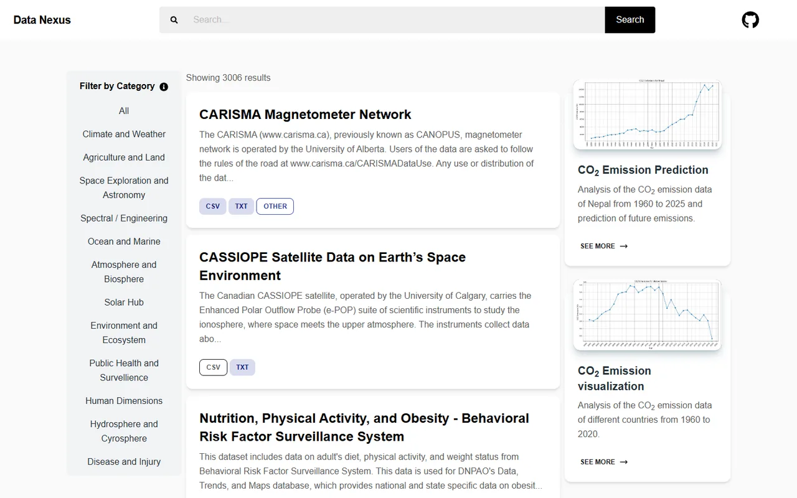
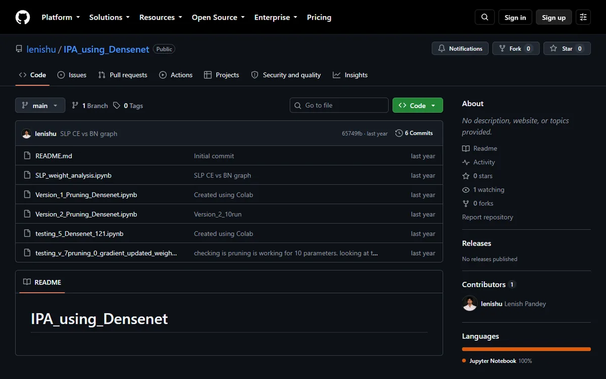
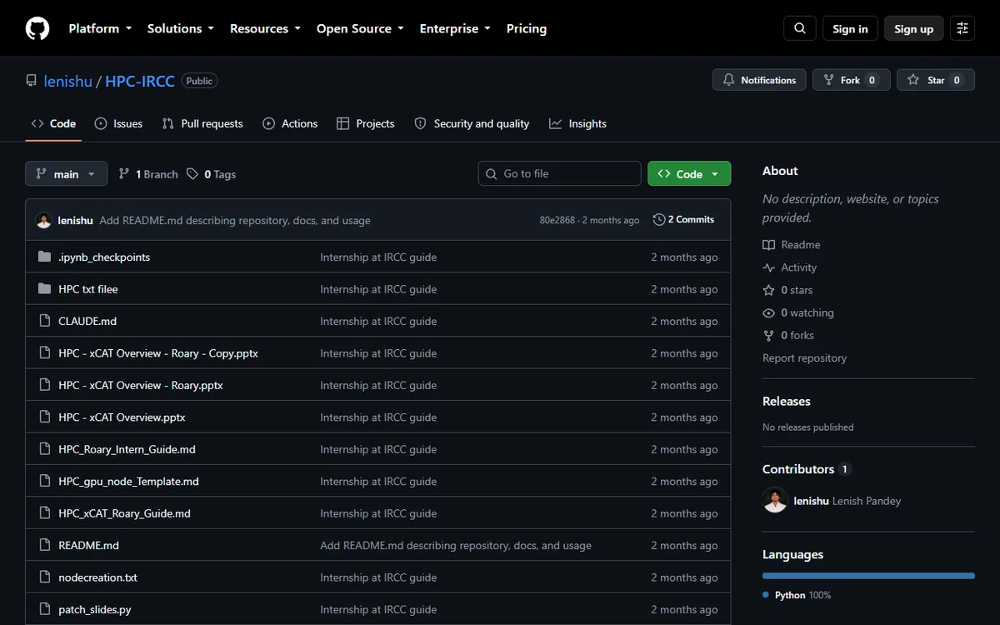
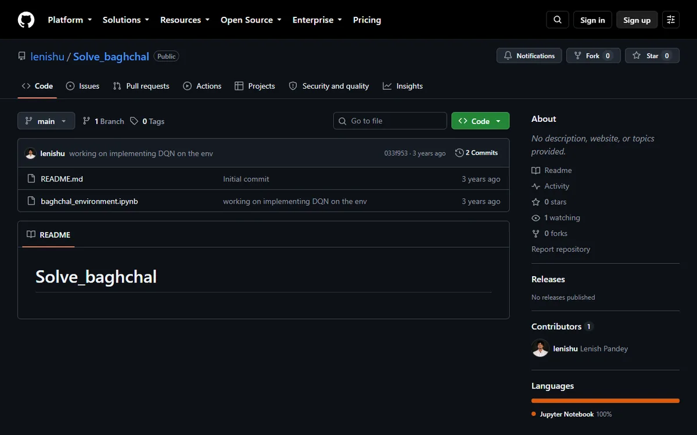
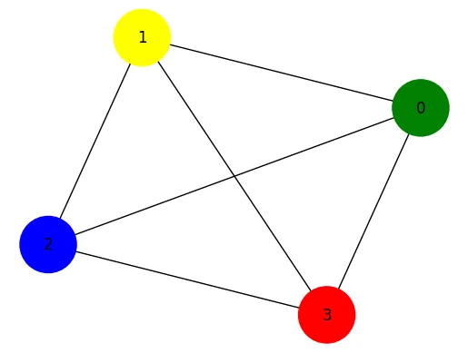
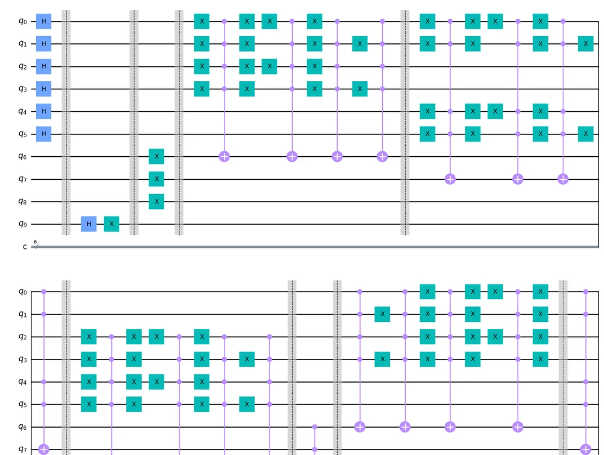
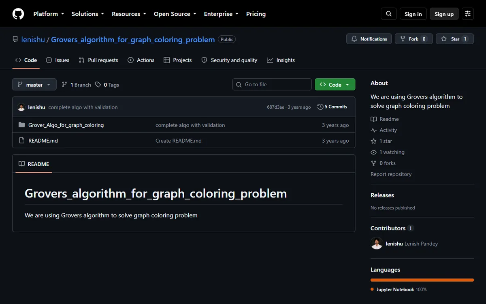

Data Nexus
Open-data platform aggregating 1,500+ datasets across science, space and climate, with a CO₂ prediction model trained on historical emissions.
JavaScriptscikit-learnData pipelines
Field 01 · AI
Deep-learning research on what networks can lose, reinforcement learning, retrieval-augmented tools, and the software that ships them.
Select a role for details.
Video, screenshots and live demos.

Open-data platform aggregating 1,500+ datasets across science, space and climate, with a CO₂ prediction model trained on historical emissions.

RepositoryModular mask pruning with reusable evaluation loops and an information-processing metric.
 FIU’s live site, not the internship prototype
FIU’s live site, not the internship prototypeModernizing FIU’s legacy class search into a responsive, mobile-first app with client-side caching.

Documentation repositoryCluster guides for Slurm and xCAT, and a retrieval-augmented assistant for HPC questions.

RepositoryCustom Gym environment for the Baghchal board game and a Deep Q-Network agent that wins 85% of games against a rule-based opponent.
Graphs, code and demos.
Department of Physics, FIU · DenseNet-121
Mask pruning from 0 to 100% sparsity across 15 configurations, measured with an Information Processing Ability metric to see where learning efficiency breaks down.
Field 02 · Quantum
Optimizers for quantum machine learning that set their own step size, and Grover’s search applied to graph coloring.
Graphs, paper links and demos.
Data Management Research Lab, FIU · with Prof. Janki Bhimani
A two-phase adaptive step-size schedule for quantum machine-learning models that bounds suboptimality through energy variance, using the Weinstein and Temple spectral inequalities. The schedule is proved equivalent to normalized Imaginary Time Evolution under Fubini–Study geometry.



International Journal of Innovative Science and Research Technology, Vol. 8 (2023) · Lenish Pandey et al.
Builds a quantum circuit that uses Grover’s search, with its quadratic speedup over classical search, to color planar graphs, applied to placing specialists across hospitals.


Qiskit circuits for general and three-color graph coloring, with validation.
Field 03 · Quant
Mathematics research on option trading, a seat in the Student Managed Investment Fund, and the probability, optimization and computing behind both.
Concept demo while the write-up is in progress.
Mathematics research · details to add
The demo on the left is a concept illustration, not a research result: Monte Carlo price paths under geometric Brownian motion, and how a European call’s Black–Scholes value responds to volatility.
Where the other two fields feed in.
Open to research roles and collaborations